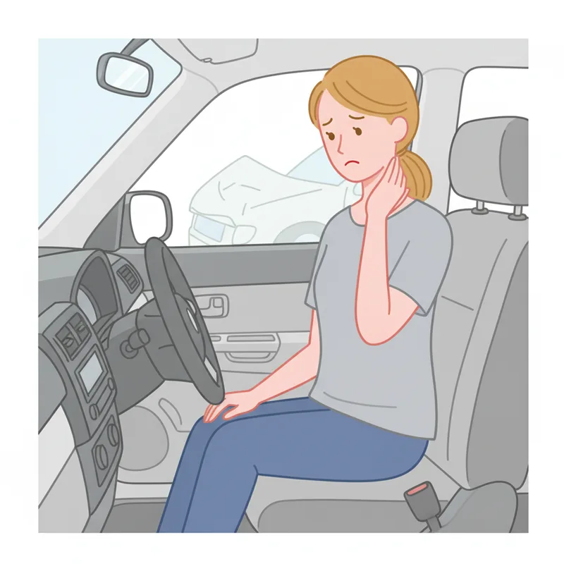
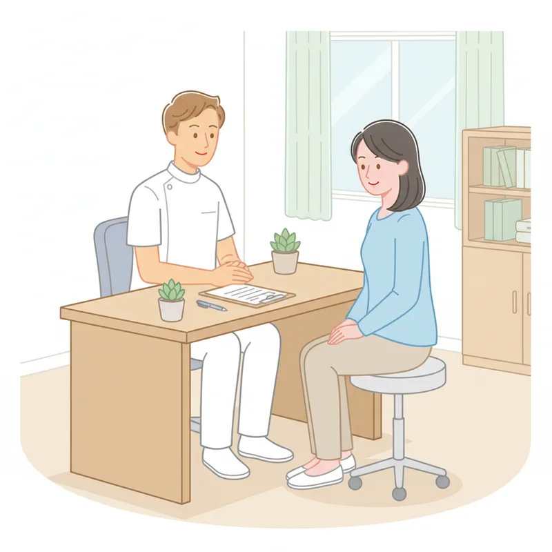

⚠️ 事故後は症状がなくても早めに受診を
交通事故後は、数日経ってから痛みやしびれが出ることがあります。気になる症状がある場合はお早めにご相談ください。

こんな症状はありませんか？
- 首・肩・腰が痛い（むち打ち）
- 頭痛・めまいが続く
- 手足にしびれがある
- レントゲンでは異常なしと言われたが不調が続く
- 保険手続きがわからない
事故後の対応手順
まずは落ち着いて、以下の手順で対応してください
1
被害者・加害者の確認と救護
まず怪我人がいないか確認し、必要に応じて救護を行ってください。
2
警察への届け出
人身事故・物損事故いずれも必ず警察に届け出てください。
3
相手の情報を確認
相手の氏名・連絡先・車のナンバー・保険会社・証券番号を確認します。
4
事故状況を記録
現場の写真・動画を撮影し、目撃者がいれば連絡先を聞いておきましょう。
5
保険会社への連絡
加入している保険会社に事故の報告を行ってください。
6
おちあい整骨院へご来院
症状がなくても早めに受診することをおすすめします。保険手続きのご相談もお気軽に。
当院の交通事故サポート

🔰 被害者・加害者どちらもサポート
どちらの立場でも、状況に応じた対応方法をご案内します。
💊 自賠責保険で窓口負担0円
交通事故による施術は自賠責保険が適用され、窓口での費用負担はありません。
📝 保険手続きのご案内
複雑な保険手続きについてわかりやすくご説明します。